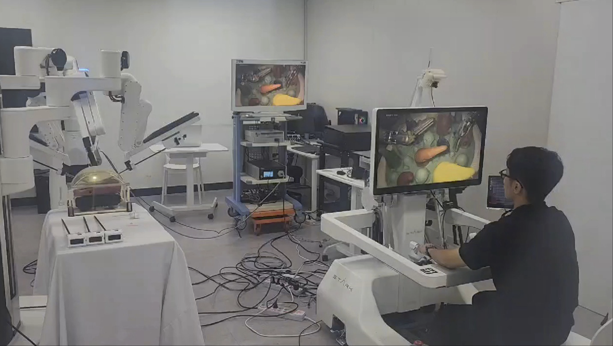
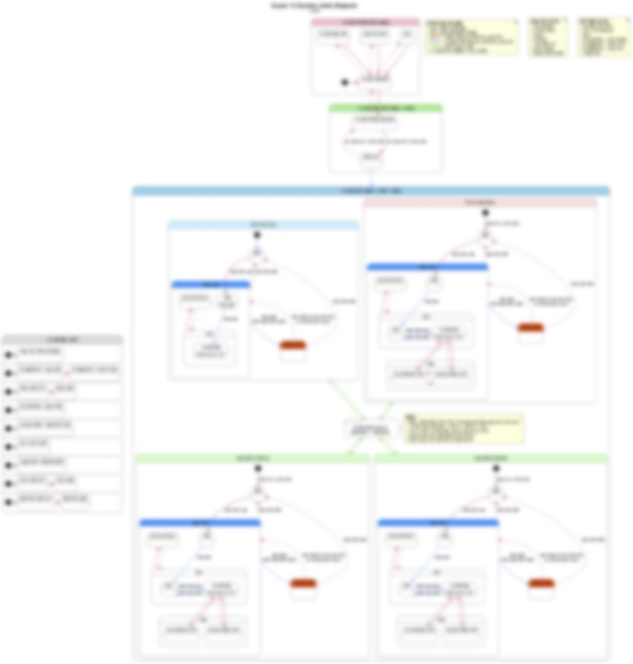
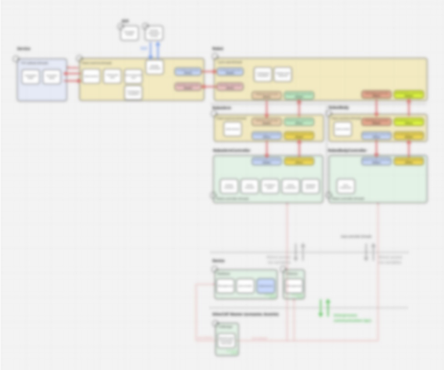
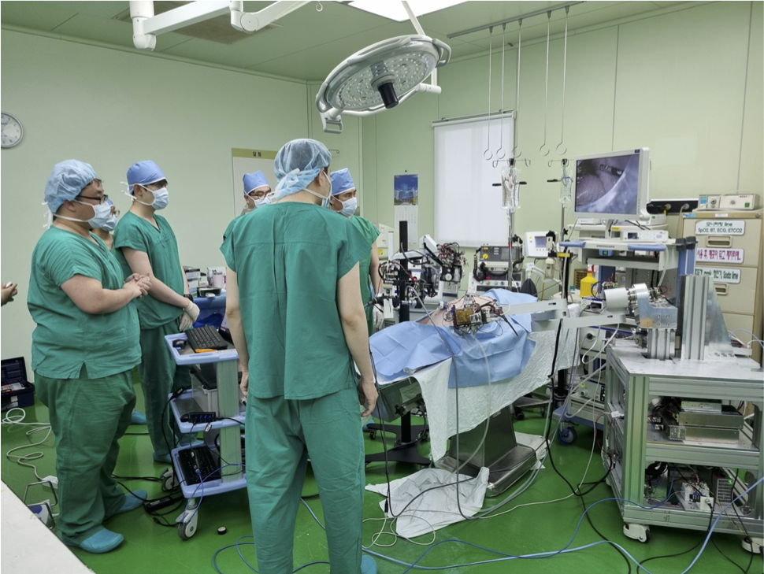

2022 - 2026 A laparoscopic telesurgical robotic system
1. Robot control software
My role: control algorithm/software development.
Skills: C++, linux RT, real-time control, teleoperation, EtherCAT, system integration, system debugging, validation
I led control algorithm and software development for Stark, a minimally invasive laparoscopic surgical robot.
Stark is a master-slave teleoperation system with tight constraints: surgical instruments, a user experience anchored to existing systems such as da Vinci, and medical device safety requirements.
As a founding member of the Robot R&D Department and its Control/SW team, I worked through every stage from prototype to engineering sample.

The goal was a robot that could be controlled, debugged, repeated, and trusted in realistic surgical workflows.
I turned system-level requirements into control software that ran on the real robot.
That meant splitting robot functions into software modules and an architecture, integrating hardware interfaces, debugging real-time behavior on the robot, and validating beyond isolated bench tests.
2. Long distance teleoperation
My role: teleoperation integration, system debugging, validation execution
I contributed to a long-distance remote surgery demonstration over more than 3,000 km, with a measured round-trip delay of 65 ms.
The work kept the whole system predictable while human input, network delay, robot motion, and hardware response were connected end to end.
Many issues surfaced only after the robots and the network were connected as one teleoperation system.
I worked across the master, the slave, the control software, and the communication layer.
I traced each problem from operator input to robot response, focusing on how latency and timing variation affected stability, responsiveness, and operator control.
The demonstration validated the software in an end-to-end surgical workflow, where control, latency, hardware, and human interaction were tested together.
As the robot and the team grew, the main challenge shifted from implementation to system clarity.
Key requirements were often hidden in clinical expectations, business milestones, and the different specialties of each team.


I turned those implicit requirements into architecture, specifications, interfaces, and validation items, clear enough for every team to build, test, review, and maintain.
Because Stark is a medical device, the architecture and V&V work also followed regulations and safety standards such as the IEC 60601 family.
Software behavior, hardware interfaces, alarms, failure handling, essential performance, and test evidence were treated as parts of one system problem.
I connected requirements to implementation and validation so that system behavior could be tested and justified, not only demonstrated.
I also led software V&V with more than 10 software engineers and coordinated architecture and specification work across more than 40 cross-functional members.
4. Labs and demonstrations
My role: system operation/debugging, experiment support, demo execution, issue triage
I led system operation for 6 animal labs, 5 cadaver labs, and more than 20 investor demonstrations for the Series E, pre-IPO, and IPO milestones.
These sessions tested the robot as a complete system while it was still being improved.

Labs and demonstrations pushed the robot beyond ordinary development conditions.
Setup, surgical workflow, hardware variation, timing, operator interaction, and subsystem dependencies all became part of the engineering problem.
I kept the system running, traced failures quickly, and fed the findings back into software, control, integration, and validation.
Each run clarified requirements, strengthened tests, and improved the implementation.